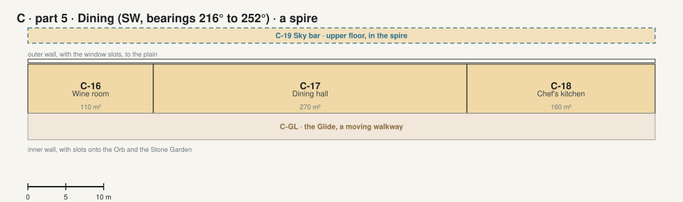

The Crown · part 5 · Dining SW, bearings 216° to 252°, a spire

| Code | Room | What it is for | Also | Size | Two of a kind |
|---|---|---|---|---|---|
| C-16 | Wine room | Wine brought up from the cellar (L1-20) for the dinners, and served from here. | 110 m² | ||
| C-17 | Dining hall ◉ picture | Dinners with guests: one basalt table for 22, the afternoon sun low through the slots. | Celebrations; meetings when visitors come. | 270 m² | L1-03 Dining room and bar |
| C-18 | Chef's kitchen | Cooks for the dining hall. | 160 m² | L1-10 Kitchen | |
| C-19 | Sky bar | Upstairs in the Dining spire: drinks at sunset with the view west. | 540 m² · upper floor | L1-03 Dining room and bar |